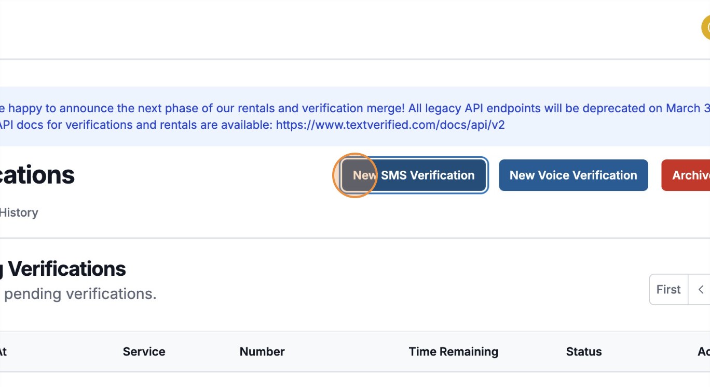
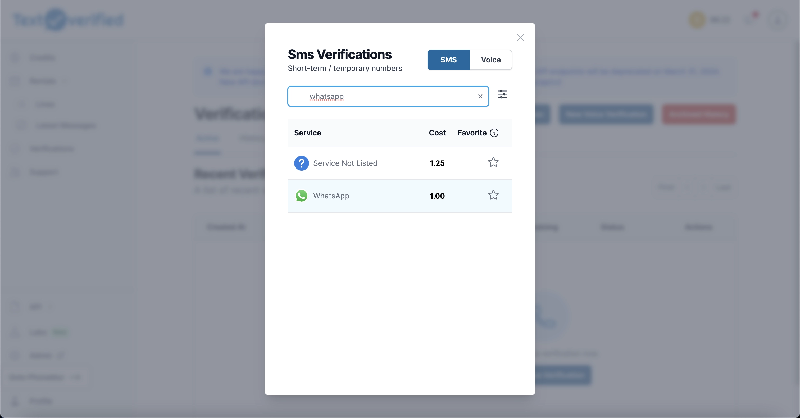
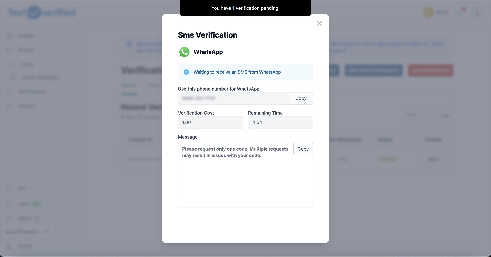
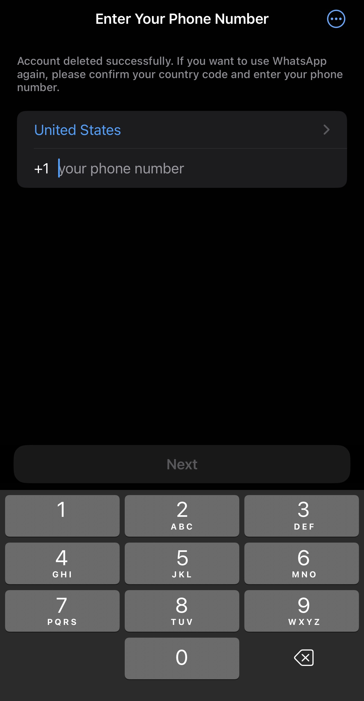
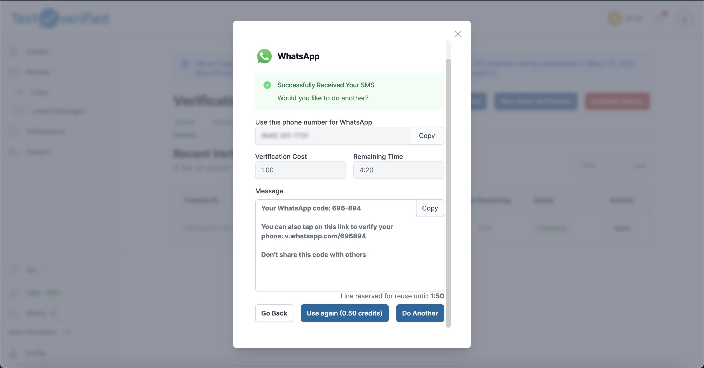
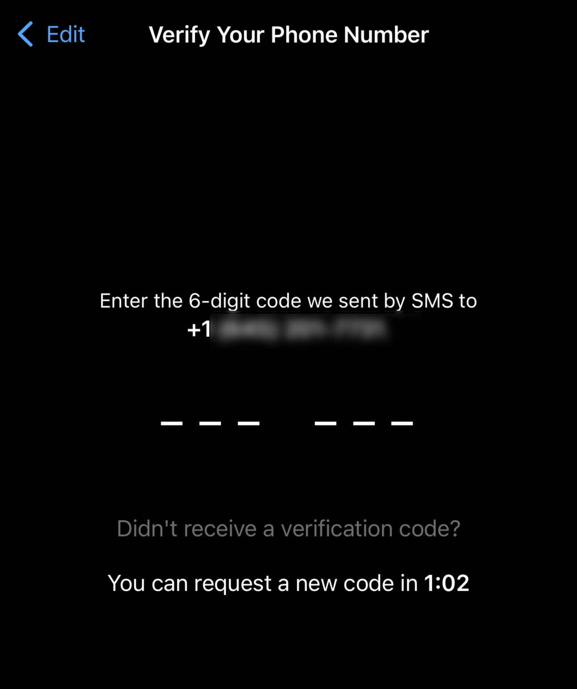
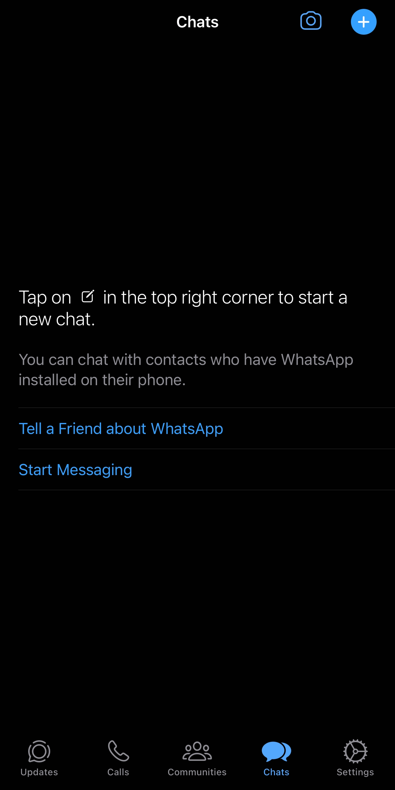

Introduction
In the year 2024, everybody knows about WhatsApp. If you don’t know by now, WhatsApp is a messaging service where you can send unlimited messages free of charge. This is different from SMS or MMS texting that can be limited by a data plan. This has made WhatsApp very popular among people who do not have unlimited texting plans, people messaging internationally, or people avoiding roaming charges. In general, it has become the universal way to text across the world, with nearly 3 billion users worldwide.
Undoubtedly, WhatsApp is a powerful free tool, but an unfortunate part of WhatsApp is that to use the app, you need a phone number to register. This is counter-intuitive to WhatsApp’s goal to provide users to text for free.
At Textverified, we want to give users control over their online privacy and allow users to register for WhatsApp without even having a phone plan. Today we’ll show you how to register for a WhatsApp number using a Textverified one-time verification.
Signing Up for Textverified
When choosing a service for a temporary phone number, it’s important to look for one that values your privacy, is reliable, and easy to use.
Textverified is the best all-around verification service. We are a reputable US-based company, using real US phone numbers from major phone providers. Textverified puts your privacy first, ensuring your data is protected. Our platform is reliable and has been helping people receive millions of verifications since 2020. We have designed our platform to be easy to use and even manage thousands of numbers.
Whether you’re signing up for a new app, need a number for a short-term project, or want to keep your personal number private, we provide a seamless experience that meets your needs.
If you have not already signed up, click here to create a Textverified account:
Using a Temporary Number with WhatsApp
Before we continue, it’s important to know that the instructions in this article assume that you’re already a user of the Textverified service. Before signing up for WhatsApp, first make sure you have
Tips from our most successful users
WhatsApp has been notorious for being a service that uses advanced tracking techniques to verify that users are using their own numbers.
Therefore, in order to receive SMS codes from WhatsApp, you must take steps in order to prove that you are a legitimate user.
Here are some guides written by us about internet hygiene:
First check out these guides to make sure that you are following these practices in order for WhatsApp to verify properly.
Note: If these hygiene practices are not followed, WhatsApp has a much higher chance of failing!
Additional tips about WhatsApp from our top users:
After following the above guides, make sure that you do these actions if verifications are failing.
- Deleting app before each verification
- Switching devices between registrations
- Switching IP addresses / proxies between registrations
- Try registering using WhatsApp and WhatsApp Business
- Multi-Account Managers
- Android: MultiSpace
- iOS: Parallel Space, Dual Space
If you have other suggestions we should list about verifying with WhatsApp, please send us a message here!
Get your Temporary WhatsApp Number on Textverified
Note: This guide is for using our cheapest WhatsApp SMS service: “verifications”. One-time verifications suit many people’s needs, but if you are looking to own your WhatsApp account for a long period of time, check out “Rentals” on Textverified.
How To Verify WhatsApp
Log on to your Textverified account
1. Click “New SMS Verification” 
2. Search for “WhatsApp” or find it in the list of services 
3. View your temporary number and navigate back to WhatsApp 
4. Open the WhatsApp App on your iPhone or Android
5. Enter the phone number on WhatsApp and wait for WhatsApp to send you an SMS 
6. Receive SMS code and use to verify WhatsApp 
7. Enter WhatsApp code and register for an account! 
8. Create your WhatsApp profile and start messaging! 
Responsible Use
Using temporary phone numbers comes with a responsibility to use them in a legal and ethical way. It’s important to remember that these numbers should be used for legitimate reasons, like protecting your privacy or testing services without exposing your real number. Our service is committed to these principles, ensuring that our numbers are used in ways that respect the law and ethical standards.
We remind our users to use our service responsibly. We believe in providing a service that helps users maintain their privacy and security online while upholding high standards of conduct. By choosing to use our service, you’re agreeing to these terms, helping create a safer and more respectful digital environment for everyone.
Conclusion
WhatsApp is one of the most powerful online apps out there, but using it comes at a cost of one of the most important pieces of information–your personal phone number. At Textverified, we enable people to protect their privacy and use WhatsApp how they see fit. Temporary numbers are a tool that gives you the power to control who has access to your personal information and help to boost your digital security.
We invite you to discover how our service can help you achieve greater privacy and security, not just on WhatsApp but across all your online activities. Our commitment to your privacy is unwavering, and we’re here to provide the tools you need to navigate the digital world with confidence.
Check out the best one-time verification and phone rental platform, where we offer one-time SMS and voice verifications, and short-term and long-term phone rentals.FAQ
How much does it cost for a temporary WhatsApp number?
- Prices range for WhatsApp numbers depending on whether you purchase a one-time verification or rent a WhatsApp number with us. Click here to see our pricing.
My number doesn’t seem to work. Why is this the case?
- Our phone numbers are purchased through major US phone companies and are extremely reliable. Usually issues with WhatsApp come down to not following browser hygeine practices. Please check out this article to learn more and diagnose your issues.
WhatsApp told me “We couldn’t send an SMS to your number. Please check your number and try again in 1 hour.” What do I do now?
- There is not much you can do to avoid the wait time since WhatsApp is a very smart and secure application. We reccomend that you try another SMS verification after clearing your cache/reinstalling WhatsApp and using a clean proxy/VPN. Follow our internet hygiene guide for more tips on how to verify correctly.
WhatsApp told me “This account is not allowed to use WhatsApp due to spam”. What do I do now?
- When you get this message, report this number on Textverified and try another number. It’s a very small chance that a number has been banned before, but it is possible. Try another number on our platform, use proper internet hygiene, and you will get verified soon!